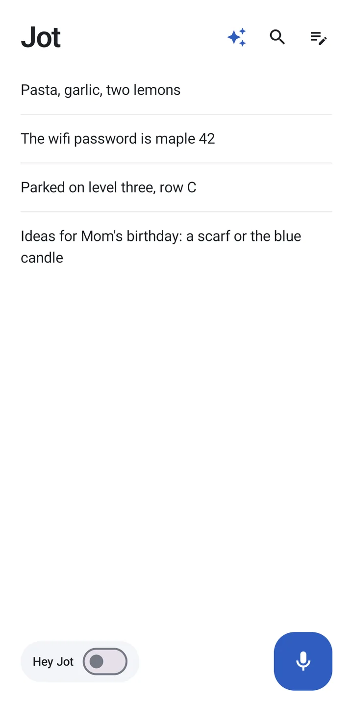
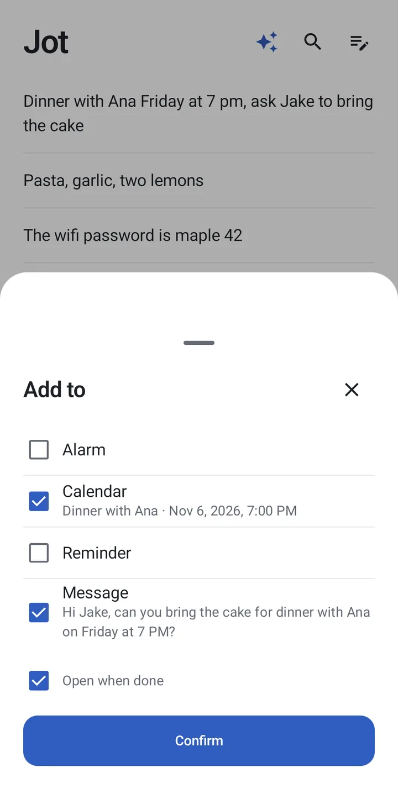
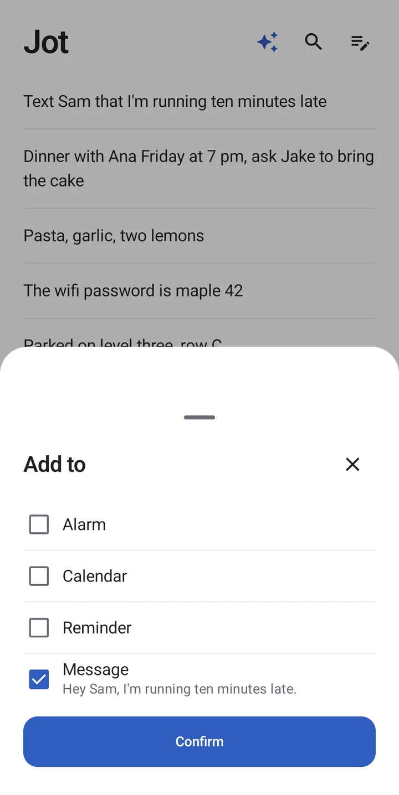
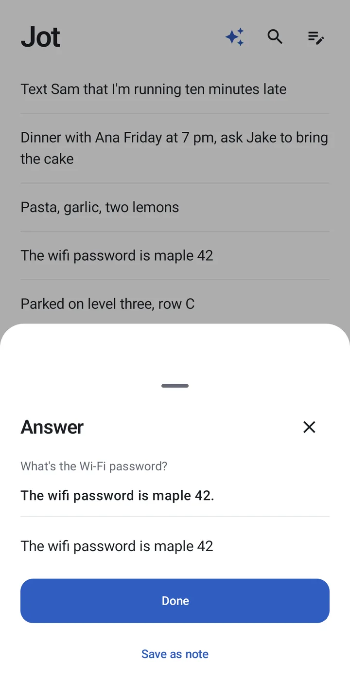

Jot
Voice notes that become alarms, events, reminders and messages.
Download for Android



Notes, voice and the companion stay on your phone.
Voice notes that become alarms, events, reminders and messages.
Download for Android



Notes, voice and the companion stay on your phone.